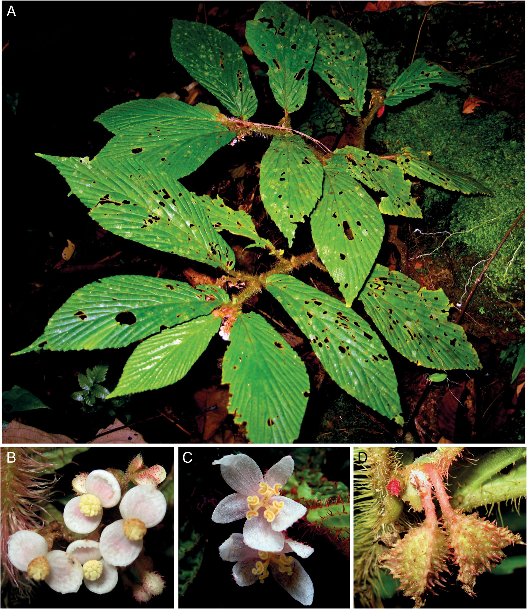
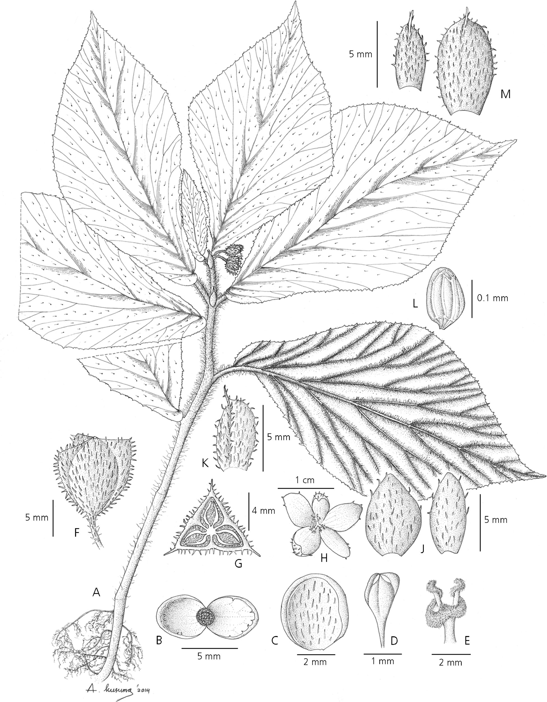
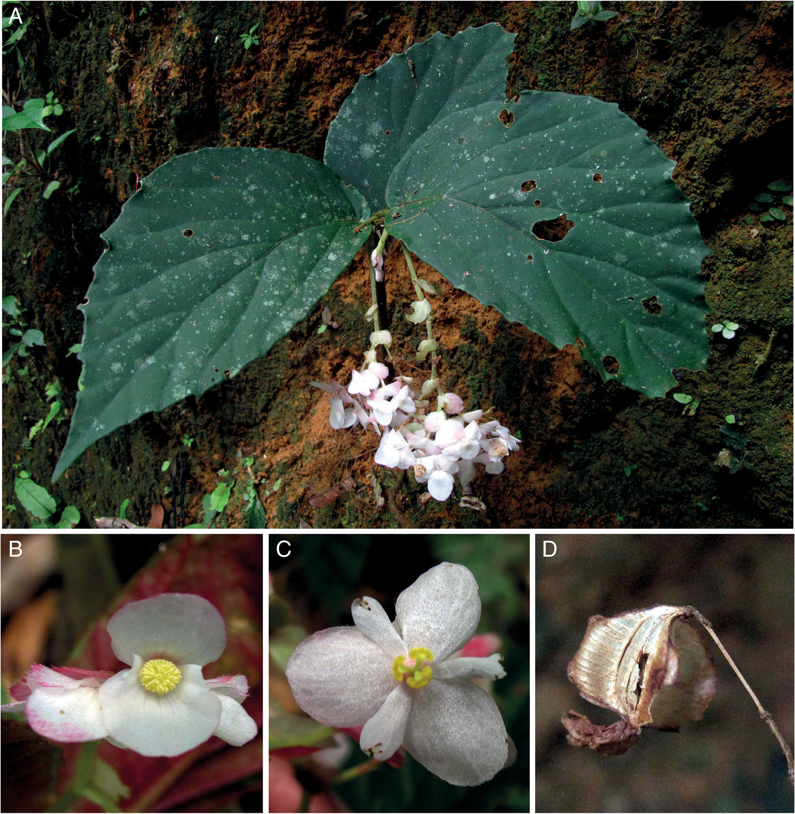
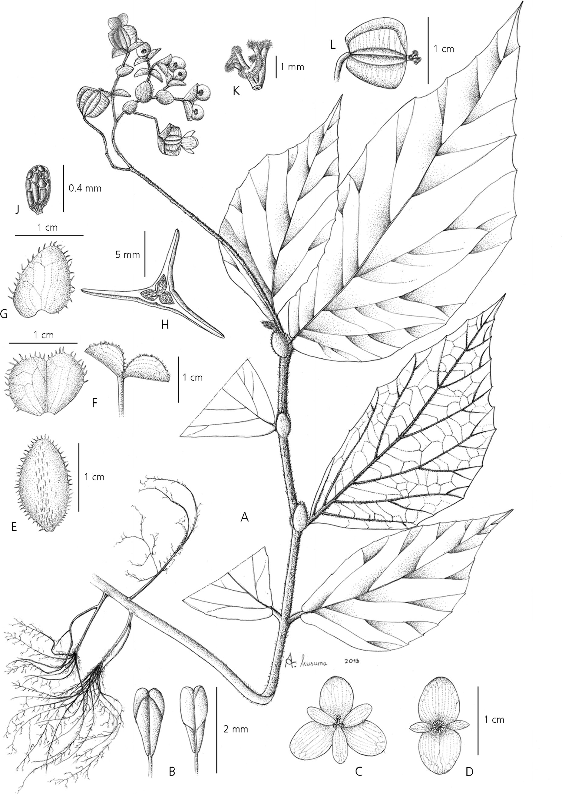

Full text is available as a scanned copy of the original print version.
Get a printable copy (PDF file) of the
complete article, or click on a page image below to browse page by page.
Links are also available for
Selected References.
Images in this article

Fig 1 Begonia mentewangensis. A habit; B male flower; C female flower; D fruit. PHOTOS: DEDEN GIRMANSYAH.

Fig. 2 Begonia mentewangensis. A habit; B open male flower; C male flower tepal with hairs on dorsal side; D stamen; E pistil; F fruit; G fruit in cross section; H female flower; J female flower tepals; K stipule; L seed; M bract and bracteole. DRAWN BY ANE

Fig. 3 Begonia dolichobracteata. A habit; B male flower; C female flower; D fruit. PHOTOS: DEDEN GIRMANSYAH.

Fig. 4 Begonia dolichobracteata. A habit; B stamens; C female flower; D male flower; E stipule; F bract; G bracteole; H fruit in cross section; J seed; K pistil; L fruit. DRAWN BY ANE KUSUMAWATI.